Приложение считает отработанные часы, норму и зарплату. Работает офлайн, синхронизируется между устройствами и составляет график на месяц вперёд.
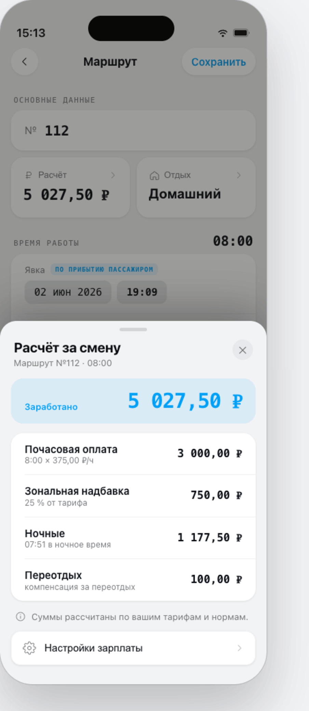
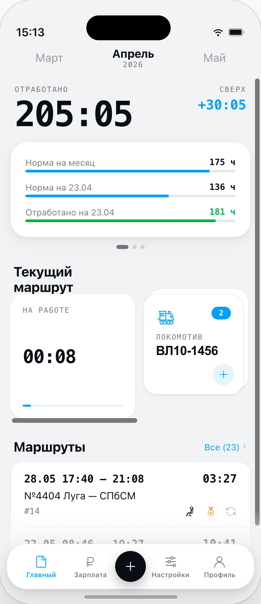
Один день — одна запись. Локомотивы, поезда, время явки и сдачи, плечи обслуживания. Всё, что было в рейсе.
Ночные, сверхурочные, праздничные, домашний отдых — по нормам депо, с расшифровкой по каждой строке.
Серия, номер, секции, экипировка и коэффициенты. Журнал всего, что вы вели, с поиском и избранным.
Выбери готовый график 2/2, 3/3 или составь свой за пару касаний.
Часы, километры, тонно-километры, переработка — за месяц, год и всю историю работы.
Всё хранится локально и работает без сети. Появится интернет — данные отправятся на сервер.
Открываешь маршрут смены одной кнопкой, добавляешь поезд, локомотив, следование пассажиром.
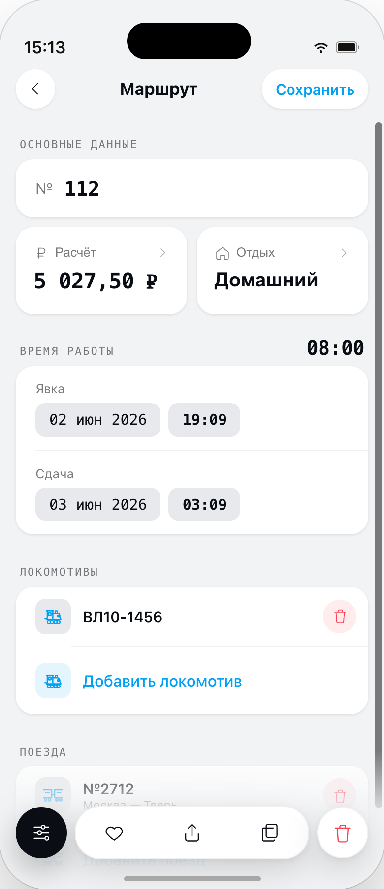
На главном экране жмёшь «+» — и вот он, маршрут смены. Явка, сдача, а ниже — карточки поезда и локомотива.
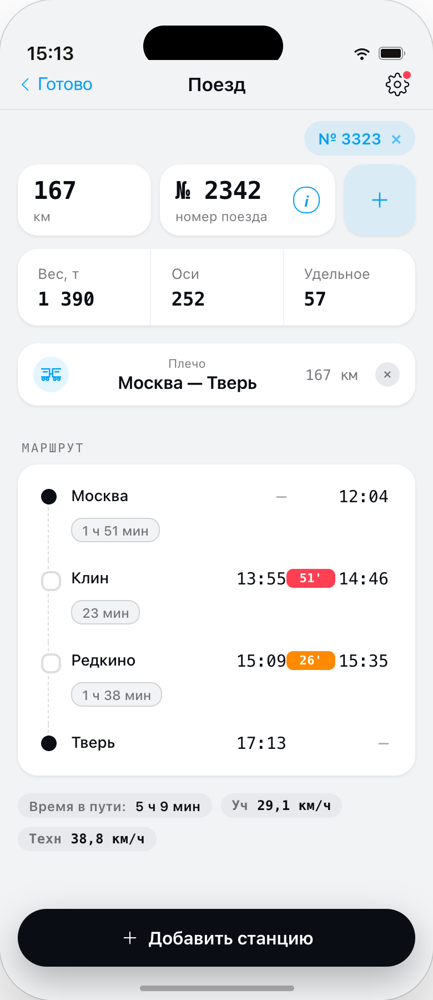
Номер, вес, оси, плечо следования и станции маршрута. Всё, что нужно для расчёта километров и надбавок.
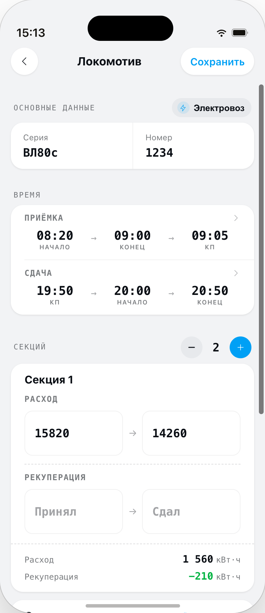
Серия, номер, показания при приёмке / сдаче. Расход считается автоматически.
Мастер «Заполнить месяц» знает сменные паттерны. Выбираете 2/2, 3/3 или свой цикл — и весь месяц заполняется сам.
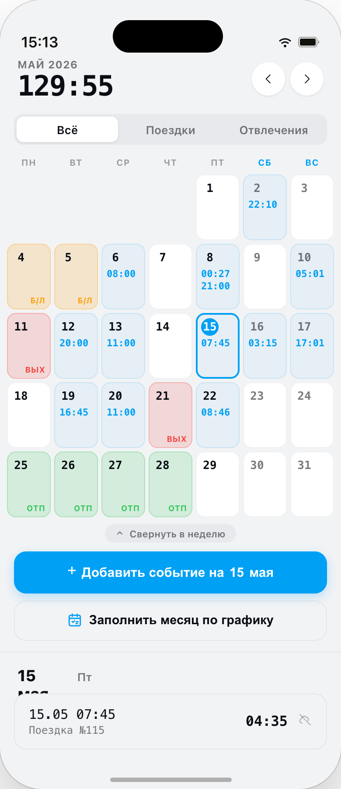
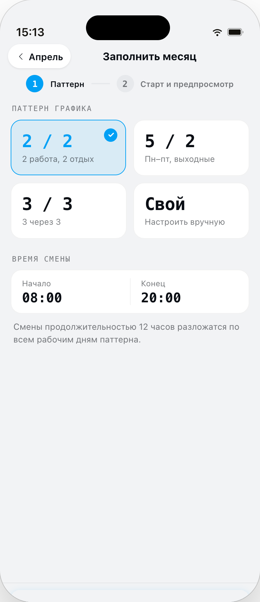
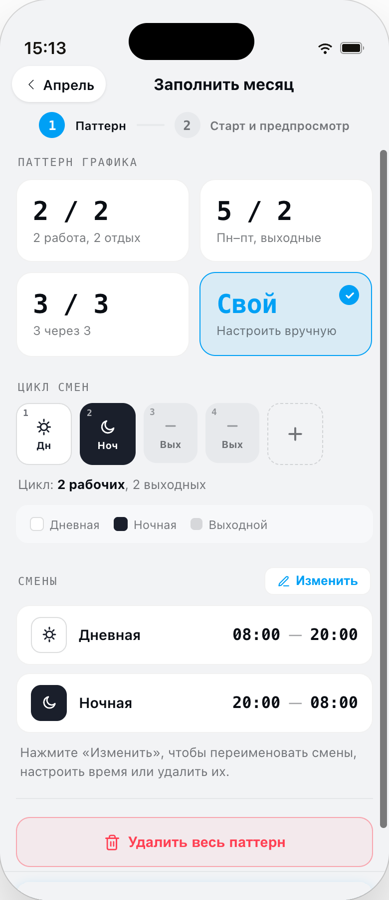
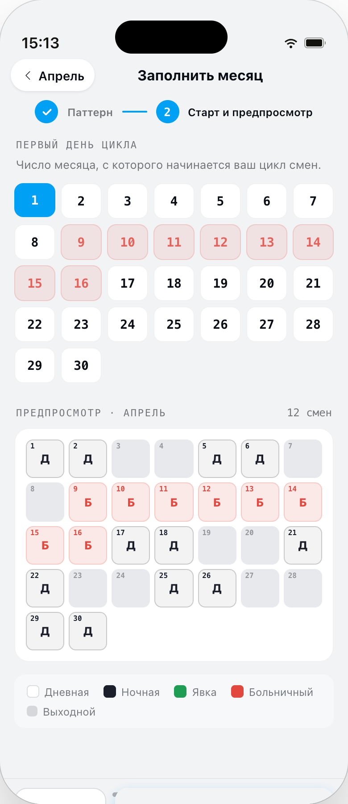
Часы, километры, тонно-километры, ночные и переработка. За месяц, год и всю историю работы в приложении — со сравнением периодов.
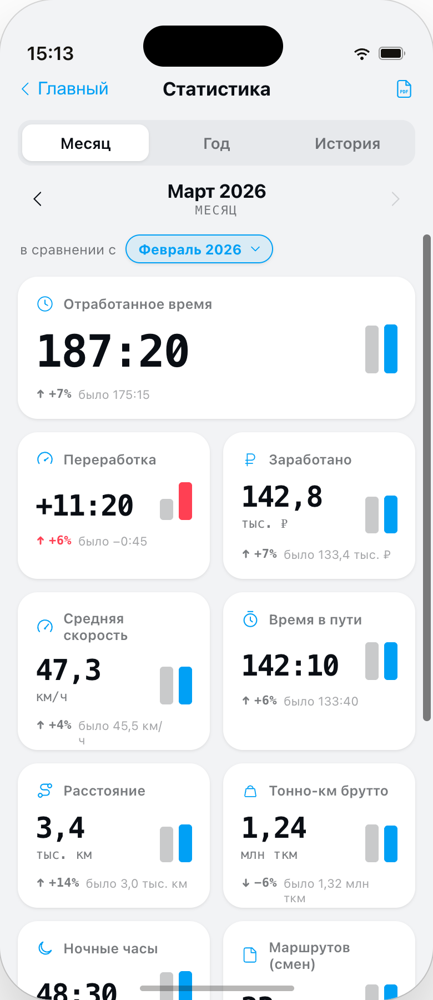
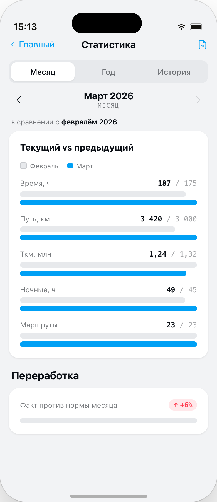
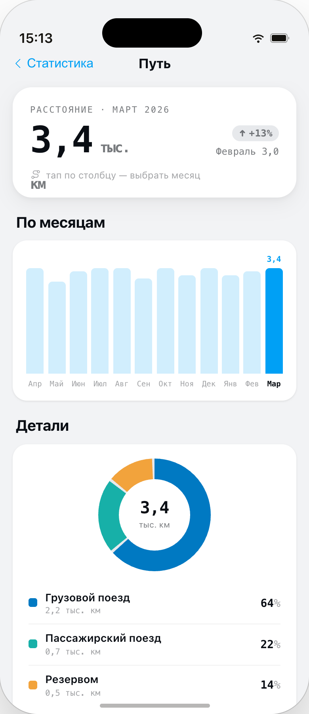
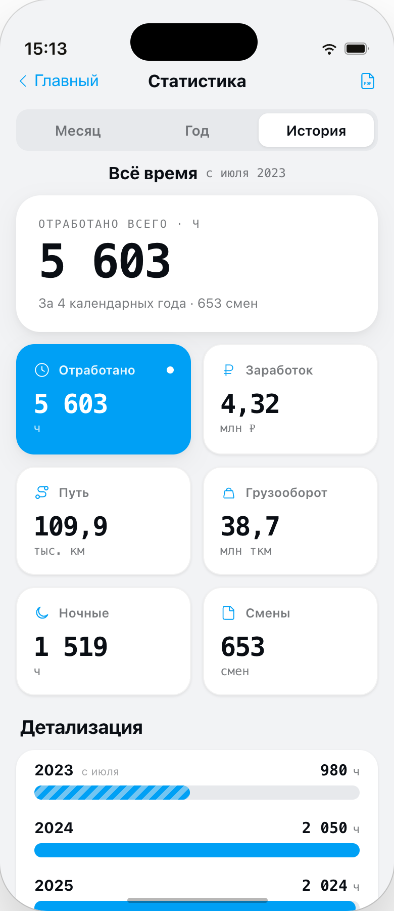
Мы прислушиваемся к машинистам и учитываем их потребности в каждой детали приложения.
«Очень большая работа проделана за последнее время. Приложение всё лучше и лучше. Спасибо.»
«Приложение очень нравится, особенно после последнего обновления. Удобно, интуитивно понятно, информативно!!! Молодец разработчик, благодарность!!! Сегодня написал отзыв — уже всё исправили, вот это скорость работы!!!»
«Очень удобное приложение. Спасибо разработчикам.»
Почти всё доступно бесплатно. Pro снимает лимит на маршруты и добавляет синхронизацию между устройствами.